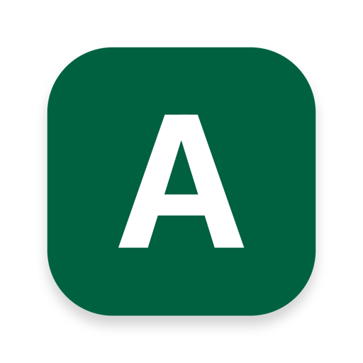

Session goals
Write what you intend to do, choose a duration, and keep the session anchored around that target.

AnchorAI focus companion for macOS
Stay with the work you meant to do.
Start a timed focus session, choose a proctor style, and let Anchor quietly check whether your screen still matches your goal.
The Monk
Steady local check-ins for focused work.How it helps
Write what you intend to do, choose a duration, and keep the session anchored around that target.
Use on-device AI modes for screen-aware check-ins without sending your work to developer-operated servers.
When you drift, Anchor gives a short reminder so you can return without resetting the whole session.
Private by default
Anchor does not run analytics, ads, tracking, or telemetry services.
Local session settings, history, and downloaded model files stay on your device unless you choose to share them.
Optional third-party AI services are only used when you configure and use those features.
Anchor is designed for students, makers, and anyone who wants focused time with less friction.